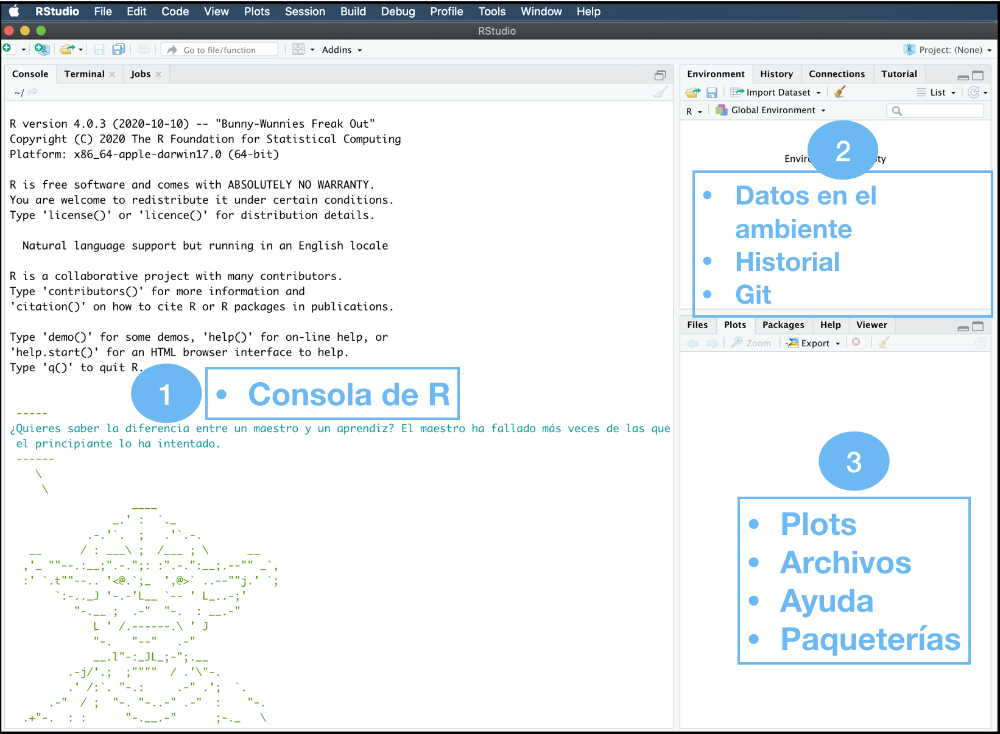
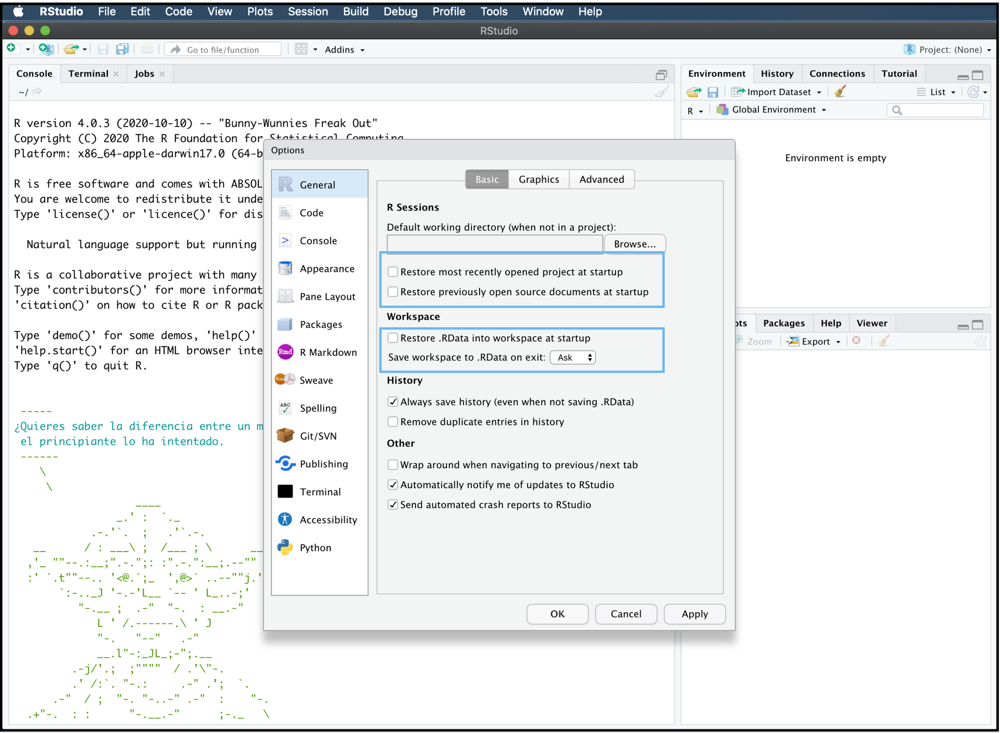
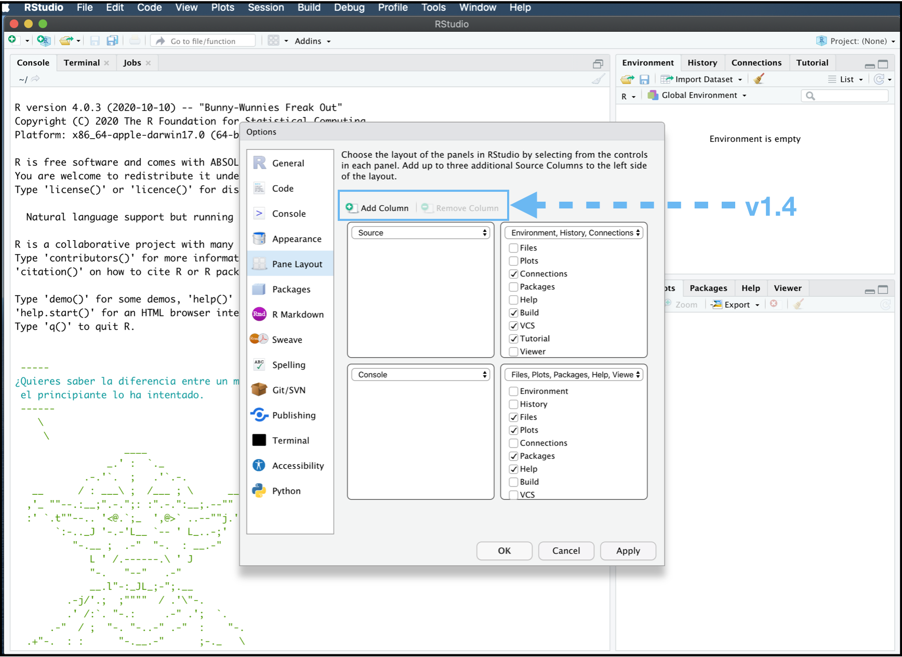

1 RStudio hacks
Erick Cuevas Fernández
9 de agosto de 2021
1.1 Inicio
Para poder usar RStudio tenemos que tener instalado R en nuestras máquinas. Si aún no lo has instalado lo puedes descargar desde el siguiente link https://cran.itam.mx. Asegúrate de tener la versión más reciente.
También necesitas descargar la versión más reciente de RStudio Desktop. (1.4.1717).
1.2 Misión de RStudio
“La misión de RStudio es crear software gratuito y de código abierto para ciencia de datos, investigación científica y comunicación técnica. Hacemos esto para mejorar la producción y el consumo de conocimiento por parte de todos, independientemente de los medios económicos, y para facilitar la colaboración y la investigación reproducible, las cuales son críticas”
1.3 Equipo de RStudio
“Las personas que se han unido a RStudio en este viaje son extraordinarias. Incluyen un número excepcional de los científicos de datos y desarrolladores de software de código abierto más productivos y respetados del mundo.”
…
1.4 Historia de RStudio

1.5 Primeros consejos para iniciar
Al abrir RStudio la consola nos arroja el mensaje que se muestra a continuación en la imagen. En este mensaje nos indica la versión de R que tenemos instalada y la plataforma en la que estamos trabajando. Para citar R en alguna publicación basta con usar la función citation(). Y para conocer a todo el equipo detrás del desarrollo de R, puedes consultarlo con la función contributors(). R y RStudio están diseñados para que muchas personas puedan aprenderlo desde cero, con tan solo este primer mensaje todo usuario podría empezar a aprender R; para empezar a aprender R intenta usar la función en tu consola de help.start() con el cual se desplegará un menú en HTML con todos los manuales para aprender a usar R, también aparecerán los manuales de todas las paqueterías del repositorio de CRAN (The Comprehensive R archive Network) así como enlaces a noticias del mundo de R.

Otro consejo útil al momento de iniciar con el uso de una paquetería o función en particular es ejecutar la función demo(). Esta función se puede utilizar con los siguientes argumentos.
demo(topic, package = NULL, lib.loc = NULL,
character.only = FALSE, verbose = getOption("verbose"),
echo = TRUE, ask = getOption("demo.ask"),
encoding = getOption("encoding"))Para desplegar todos las demostraciones disponibles ejecuta la función como se muestra a continuación:
demo(package = .packages(all.available = TRUE))1.6 La interfaz gráfica de RStudio
RStudio es un entorno de desarrollo integrado (IDE) para R. Su interfaz gráfica incluye 3 paneles principales:
- Consola de R
- Datos en el ambiente, Historial, Conecciones remotas, Git.
- Gráficos, Archivos, Ayuda, Paqueterías.

1.6.1 Opciones Globales…
Las opciones globales (Global Options…) nos permitirán cambiar aspectos visuales de la organización de la interfaz gráfica. Para acceder a estas opciones debemos ir a Tools | Global Options... o usar directamente el atajo de teclado command + , (Mac) ó ctrl + , (Linux y Windows).
Una vez accesando a las Opciones Globales podemos modificar que no se gaste memoria temporal al guardar datos o código de sesiones anteriores en la parte de General. Al quitar las “palomitas” de los pequeños cuadros de las opciones generales señaladas en los recuadros azules.

Dentro de las Opciones Globales podemos modificar nuestros atajos de teclado, el tamaño de la indentación, margenes de código, etc, etc. Una función atractivamente visual al momento de escribir código, sobre todo en funciones y para hacer sub conjuntos de nuestros datos, es Parentesis de Arcoíris. Esta es una nueva función en esta nueva versión de RStudio. Para habilitarla debemos dentro de las Opciones Globales debemos acceder a Code | Display y marcar la “palomita” en Rainbow parentheses.

En la se sección de Apariencia, esta opción podemos definir el color, letra y tamaño de nuestro editor de código. De esta manera personalizarlo a nuestras necesidades o gustos. También podemos modificar el diseño de los paneles en Pane Layout, en la nueva versión de RStudio podemos visualizar dos editores de código al mismo tiempo. Al hcer click en Add column. En esta sección podemos modificar la distribución de los paneles y el contenido de ellos.

1.6.2 Actividad
Realiza los cambios necesarios en tus Opciones Globales para que no se guarde el proyecto más reciente ni los datos en el ambiente de RStudio, así como la .RData
Habilita los paréntesis de arcoíris.
Cambia el tema de tu RStudio al de Dracula y usa la letra y el tamaño que más prefieras.
1.7 Atajos con el teclado en RStudio
NOTA: en windows en vez de command usa control
%>%:command+Shift+m
- Para comentar código:
command+Shift+c - Expandir cursor: mantén presionado
Alt+ usa el cursor - Ejecutar en la terminal líena de código y saltar a la siguiente línea de código:
command+Enter - Ejecutar en la terminal línea de código y mantenerse en la línea de código:
Alt+Enter - Compilar en reporte pdf:
Shift+command+k
1.8 Archivos de RStudio
En RStudio podemos generar todos los archivos enlístados en “New File”. El archivo más usado para desarrollar código en R es “R Script”. Aún así RStudio nos permite hacer reportes de nuestros código con “R Notebook y R Markdown”, aplicaciones web con “Shiny Web App”, generar APIs con “Plumber API”, editar código en HTML, C, C++, Python, CSS, JavaScript, Shell, entre otros. Más adelante verás cómo optimizar tu trabajo trabajando con RProject en RStudio.
1.9 Trabajando con el Environment
1.9.1 Actividad
Crea dos R scripts. Agrega una nueva columna en la visualización de los Scripts dentro de Opciones Globales.
En un script ejecuta el siguiente código:
install.packages("MASS")
library(MASS)
data(cats)
View(cats)
table(cats$Sex)PAUSA
¿Qué sucede al ejecutar data(cats) y View(cats)?
¿Qué formas hay desde la interfaz gráfica para importar datos?
- En el otro script ejecuta el siguiente código:
install.packages("ggplot2")
library(ggplot2)
ggplot(cats, aes(x = Sex)) +
geom_bar(fill = "orange", color = "black") + theme_classic() PAUSA
¿Cómo podemos exportar el gráfico?
1.10 Últimos tips
Puedes modificar el zoom de cada panel en RStudio según tus necesidades y preferencias.
Lupa
Várita mágica
Addins
Help
RMarkdown
1.10.1 Actividad
Ejecuta el siguiente código
install.packages("ggThemeAssist")
g <- ggplot(cats, aes(x = Sex)) +
geom_bar(fill = "orange", color = "black") + theme_classic() +
xlab("Sexo") + ylab("Número de Gatos") + ggtitle("Gatos")
gA continuación selecciona g, ve a Addins y da click en ggplot Theme Assistant